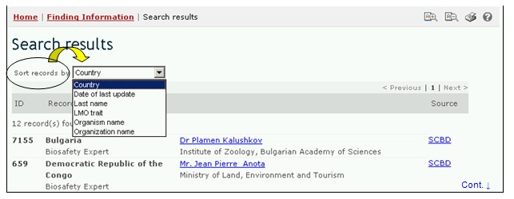

URL: http://bch.cbd.int/database/experts/
La liste des experts a été établie par la Conférence des Parties à la Convention sur la Diversité Biologique (CP) lors de l'adoption du Protocole (voir Décision EM-I/3). Son but est de fournir des conseils et d’autres soutiens, suivant le cas et sur demande, aux pays en développement Parties et aux Parties avec des économies en transition, pour qu’elles conduisent des évaluations des risques, prennent des décisions éclairées, développent des ressources humaines nationales et promeuvent le renforcement des institutions, associés au mouvement transfrontière d'OVM.
La CP-RP, l’organe directeur du Protocole, a décidé que l’accès à la liste des experts sera maintenu à travers le CEPRB, où il y a des formulaires de présentation des candidatures pour la liste à la disposition pour que les Parties puissent proposer des experts. L’accès aux rapports dans la base de données de la Liste des Experts et le fonds volontaire est possible dans la section de communication des rapports dans les pages du Protocole. Le Module 03 couvre l’accès à ces rapports.
L’interface de recherche trouver pour la base de données de la Liste des Experts est accessible depuis le lien dans le menu déroulant Trouver l'information sur la barre de navigation, ou depuis le lien dans le menu du côté gauche de la page Trouver l'information ou depuis le lien dans le texte de la Liste des Experts dans la même page. Ces liens conduisent les utilisateurs vers la page Recherche de la Liste des Experts, où ils peuvent chercher des experts en biosécurité désignés par les Gouvernements.

Figure 57

Figure 58
Cette base de données permet aux utilisateurs de chercher les Experts en Biosécurité désignés par les Gouvernements.
Il y a cinq boîtes de critères de recherche pour préciser les recherches dans cette base de données. Chacune a un menu déroulant depuis lequel il est possible de sélectionner le critère désiré. Pour chaque menu déroulant, le choix par défaut est le premier critère en haut de la liste du menu. A droite de chaque boîte, un bouton permet à l’utilisateur d’activer la sélection multiple. Une fois dans le mode sélection multiple il est possible d’ajouter plus de critères à la sélection en cliquant sur le critère approprié tout en pressant sur la touche Ctrl (Contrôle).
La Boîte 1 [Sélectionner un Pays] donne une liste de tous les noms des pays dans un menu déroulant pour que les utilisateurs puissent sélectionner un ou plusieurs pays spécifiques pour une recherche.

Figure 59
La Boîte 2 [Sélectionner une région] liste les régions dans un menu déroulant pour que les utilisateurs puissent sélectionner un ou plusieurs groupes de pays spécifiques pour une recherche. La liste des groupes de pays contient tous les groupes géographiques ou politiques majeurs de pays et permet de restreindre la recherche aux enregistrements soumis seulement par les membres du ou des groupe(s) sélectionnés.

Figure 60
La Boîte 3 [Experts] permet à l’utilisateur d’appliquer des filtres pour le nom, la nationalité ou le pays désignant l’expert afin de restreindre encore plus la recherche aux enregistrements qui sont spécifiquement en rapport avec l’un des filtres sélectionnés.
En sélectionnant un ou les deux filtres du menu déroulant on ouvre des boîtes de recherche additionnelles avec un menu déroulant d’options, chacune en rapport avec l’un des filtres sélectionnés. Plusieurs filtres peuvent être cumulés en utilisant la touche Ctrl (Contrôle) (c’est-à-dire, en cliquant sur le filtre approprié tout en appuyant sur la touche Ctrl).

Figure 61
La Boîte 4 [Date de l’enregistrement] permet à l’utilisateur de restreindre la recherche à la date à laquelle le document a été enregistré dans le CEPRB. Le menu déroulant fournit un certain nombre d’options pour limiter la recherche seulement aux enregistrements soumis au cours de la période sélectionnée (par ex. «dernier jour», « dernier mois», « dernière année», etc.).

Figure 62
La Boîte 5 [Recherche par mot clé] fournit une opportunité d’utiliser des mots clé pour restreindre la recherche. L’utilisateur peut utiliser une syntaxe standard avec des mots clé (combinaison d’opérateurs AND / OR) pour chercher avec plusieurs mots ou parties centrales de mots (par ex. « Importation OR Exportation »). Une recherche effectuée en utilisant des mots clé produit seulement les résultats d’enregistrements contenant exactement le texte recherché et non pas les synonymes possibles qui n’ont pas été insérés (c’est-à-dire, une recherche avec un mot clé unique « maïs » donnera une liste d’enregistrements contenant le mot « maïs » mais non pas les mots « corn » ou « Zea mays »).

Figure 63
La page de recherche offre trois boutons pour produire une liste d’enregistrements. Le bouton Rechercher (à la fois en haut et en bas de l’interface de recherche) permet à l’utilisateur d’activer une recherche sur la base des critères de recherche sélectionnés dans les boîtes des moteurs de recherche. Les résultats de la recherche sont par défaut classés alphabétiquement par pays. Le bouton Afficher tous les enregistrements (en bas de l’interface de recherche) permet à l’utilisateur d’obtenir une liste de tous les enregistrements dans cette base de données.

Figure 64
Les pages des Résultats de la recherche ont un outil de classement en dessus de la liste d’enregistrements. Celui-ci peut être utilisé pour classer les enregistrements selon des critères spécifiques pour cette catégorie d'information. Notez que les critères de classement changent lorsque l’utilisateur sélectionne des critères de recherche différents.

Figure 65
Exemple. Un utilisateur veut identifier des experts de l’Europe qui aient l’expérience dans la foresterie et dans l’évaluation des risques. L’utilisateur (i) sélectionne Eurasie –Europe (tous les pays) dans la boîte Zones géographiques, région et (ii) il entre foresterie ET évaluation des risques dans la boîte Recherche par mot clé.

Figure 66
Pour obtenir les résultats de la recherche, il clique sur le bouton Rechercher. Les résultats de la recherche sont affichés comme une liste d’enregistrements, regroupés par pays. Pour obtenir des informations détaillées sur chaque expert, il faut sélectionner le nom de l’expert, ce qui ouvre l’enregistrement.
Figure 67